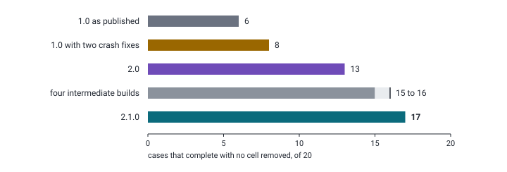
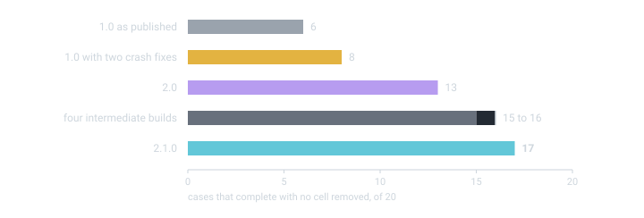
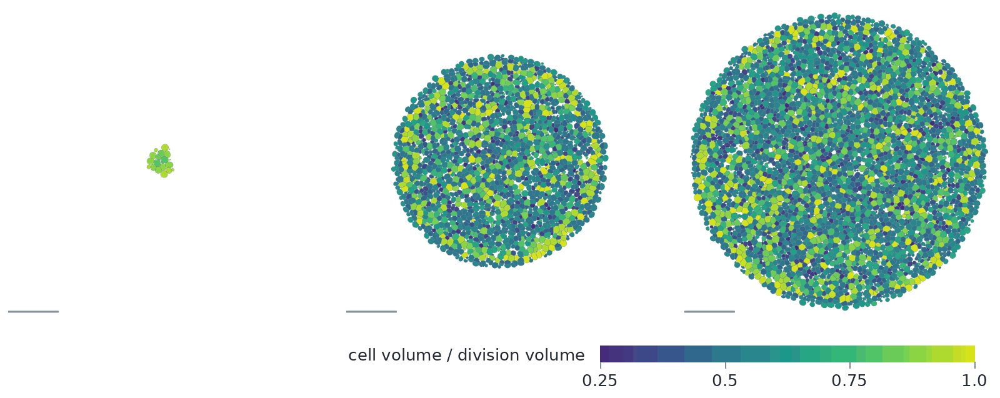
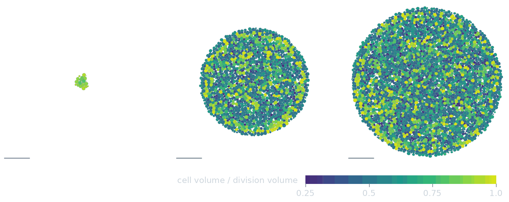

Benchmarks#
In November 2026 every released version of SimuCell3D, and the builds between them, ran the same set of cases on identical cloud machines: 243 runs over five tissues and eight builds, about 1,827 run-hours on 8-core machines (GCP c2-standard-16, 8 threads). This section reports what those runs measured: which cases each version completes, what a run costs, which time step is stable, where the model itself stops being valid, and how much repeated runs differ.
The numbers describe release 2.1.0 as measured in November 2026, on that hardware. They are measurements, not guarantees. The 2.x releases are maintained by Nilesh Patil on a fork; they are not reviewed or endorsed by the authors of the article, the Iber Lab or ETH Zurich. SimuCell3D was created by Steve Runser, Roman Vetter and Dagmar Iber (About SimuCell3D).
Headline results#
Measure |
1.0 |
1.0 with two crash fixes |
2.0 |
2.1.0 |
|---|---|---|---|---|
Cases completed, of 20 |
6 |
8 |
13 |
17 |
Runs ending in an abort, crash or hang |
15 of 21 |
23 of 41 |
9 of 22 |
0 of 44 |
Wall time, growth benchmark to 10,000 cells |
stops at 126 to 165 cells |
2.53 ± 0.06 h |
crashes by 216 cells |
1.28 ± 0.01 h (2.0× faster) |
Wall time, vesicle, 100,000 iterations |
16.86 h (one value of ε completes) |
16.55 ± 0.62 h |
9.49 ± 0.79 h |
6.20 ± 0.95 h (2.7× faster) |
Memory per 1,000 cells, growth benchmark |
not measurable |
0.214 GiB |
not measurable |
0.130 GiB (39% less) |
Wall-time scaling with cell count N |
not measurable |
\(N^{1.344 \pm 0.016}\) |
not measurable |
\(N^{1.333 \pm 0.010}\) |
Comparisons are against 1.0 with two crash fixes, because 1.0 as published stops before most of these measurements are possible. “±” is the standard deviation over three runs, or over all completed runs of the vesicle sweep.
What each line means for a user:
Cases completed. A case completes when every run of it reaches its end without the solver removing a cell as unstable. 2.1.0 misses three of the 20; Which cases complete names them.
Aborts, crashes and hangs. None of the 44 runs of 2.1.0 stopped early. Where 2.1.0 meets trouble it removes cells instead, and still exits with status 0; count the removals in every run (Safeguards).
Wall time. On the same 8 cores, 2.1.0 needs about half the time of 1.0 with two crash fixes for the growth benchmark and less than half for the vesicle. Where the speed came from is on Wall time, scaling and memory.
Memory. A growing tissue in 2.1.0 needs about 0.13 GiB per 1,000 cells; 145,000 cells fit in 18.9 GiB.
Scaling. Cumulative wall time grows as \(N^{1.33}\), the exponent of the fit published with the paper. Plan a run with the fits on Wall time, scaling and memory.
Time step. The growth benchmark is unstable at its published time step,
1e-7s, in every build;2.5e-8s ran clean to about 145,000 cells (Stable time step).Validity. Beyond about 5,000 cells the growth benchmark’s core is no longer a packed tissue: cells sit on top of each other. Per-cell statistics of that tissue are valid only in its outer shell (Limits of the model).
Reproducibility. Scalar readouts repeat to about a percent; runs are not bit-identical (Reproducibility).


Cases that complete with no cell removed, of 20 common cases. Each later version completes more; 2.1.0 completes 17. The four builds between 2.0 and 2.1.0 differ by one case among themselves.#


Cases that complete with no cell removed, of 20 common cases. Each later version completes more; 2.1.0 completes 17. The four builds between 2.0 and 2.1.0 differ by one case among themselves.#


The growth benchmark at one scale in three versions: 2.1.0 grows the tissue more than three times
further than 1.0 with two crash fixes, and 1.0 as published stops at 127 cells.
parameters_benchmarck.xml, contact model 1, time step 2.5e-8 s. Left: 1.0 as published, last
snapshot, 64 cells; the run stops at 127 cells. Middle: 1.0 with two crash fixes, last snapshot,
40,634 cells; the run stops at 42,335. Right: 2.1.0, last snapshot, 136,043 cells; the run reaches
144,919 at the 48 h cap. Mid-plane cross-sections, one outline per cell, coloured by cell volume
relative to the division volume (0.25 to 1.0). Each frame is 320 µm wide; the grey bar is 50 µm.
Counts are cells in the snapshot shown. Beyond about 5,000 cells the core of this tissue is not
physically packed in either version that reaches that size (Limits of the model).#


The growth benchmark at one scale in three versions: 2.1.0 grows the tissue more than three times
further than 1.0 with two crash fixes, and 1.0 as published stops at 127 cells.
parameters_benchmarck.xml, contact model 1, time step 2.5e-8 s. Left: 1.0 as published, last
snapshot, 64 cells; the run stops at 127 cells. Middle: 1.0 with two crash fixes, last snapshot,
40,634 cells; the run stops at 42,335. Right: 2.1.0, last snapshot, 136,043 cells; the run reaches
144,919 at the 48 h cap. Mid-plane cross-sections, one outline per cell, coloured by cell volume
relative to the division volume (0.25 to 1.0). Each frame is 320 µm wide; the grey bar is 50 µm.
Counts are cells in the snapshot shown. Beyond about 5,000 cells the core of this tissue is not
physically packed in either version that reaches that size (Limits of the model).#
Pages in this section#
Method: machines, builds, tissues and input files, what “completed” and “usable” mean, how the numbers were read and checked.
Which cases complete: every case in every version, how 1.0 fails, and how often a forward run of the vesicle returns a usable result.
Wall time, scaling and memory: wall time, scaling, memory, core utilisation, cost and sizing.
Stable time step: the stable time step per tissue and build, and what happens at
1e-7s.Limits of the model: limits of the model the runs exposed (cell superposition, unlogged deaths, the vesicle shell, exit status) and the defects still open in 2.1.0.
Reproducibility: replicate noise, the two sources of non-determinism, and where 1.0 and 2.x agree.